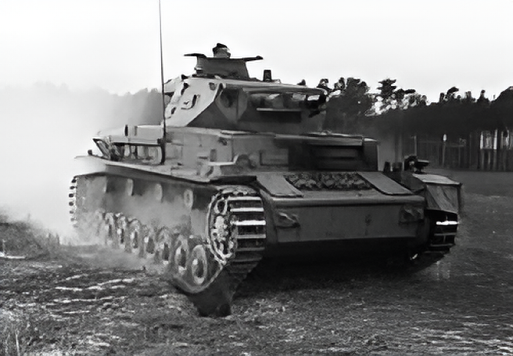

The Panzer IV (Panzerkampfwagen IV) was a German medium tank introduced in 1937 and became the most widely produced German tank of World War II. Initially designed for infantry support with a short-barreled 75 mm KwK 37 L/24 gun, it was later upgraded with a long-barreled 75 mm KwK 40 L/43 or L/48 gun to effectively combat Allied medium tanks. The Panzer IV served on all fronts — Europe, North Africa, and the Eastern Front — and was used in various variants, including command, assault gun (Sturmgeschütz), and anti-aircraft versions. Its versatility, ease of production, and balanced performance made it the backbone of Germany’s armored forces and a key factor in early German blitzkrieg successes.

- Characteristics:
- Type: Medium tank
- Weight: 25 tons
- Crew: 5
- Gun: 75mm
- Speed: 38 km/h